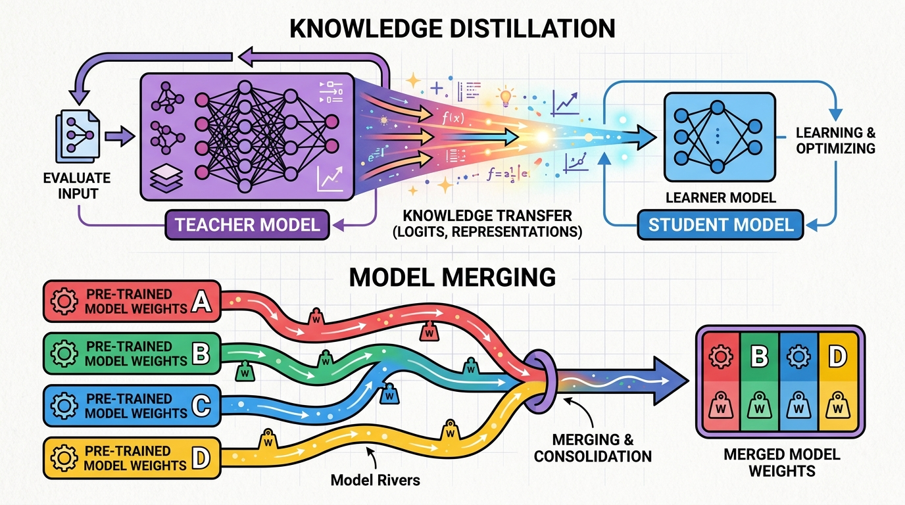

"The goal is to make the student not just mimic the teacher, but understand why the teacher makes the choices it does."
A Distilling AI Agent

Fine-tuning adapts an existing model to new tasks, but it is not the only way to create specialized models. Knowledge distillation transfers capabilities from a large "teacher" model into a smaller, faster "student" model, enabling deployment at a fraction of the cost. Model merging combines multiple fine-tuned models into a single model that inherits capabilities from all of them, without any additional training.
These techniques have produced some of the most impressive results in the open-source LLM ecosystem. Microsoft's Phi models used distillation from GPT-4 to create small models that punch far above their weight, challenging conventional scaling laws. Community model merges on the Open LLM Leaderboard routinely outperform their constituent models. DeepSeek used distillation to create efficient reasoning models from their larger R1 teacher.
This module also covers continual learning: how to adapt models to new domains over time without catastrophically forgetting their general capabilities. By the end, you will understand the complete toolkit for creating, combining, and evolving specialized LLMs for production deployment.
Who: A 12-person health tech startup building a symptom-checker chatbot for mobile devices.
Situation: Their GPT-4 powered prototype impressed investors and achieved 94% diagnostic accuracy in trials, but API costs hit $47,000 per month at just 10,000 daily users.
Problem: Investors wanted proof the product could scale to 500,000 users without burning through the entire Series A on inference costs alone.
Dilemma: Switching to a smaller open-source model dropped accuracy to 71%, which was unacceptable for a medical application. Keeping GPT-4 made the unit economics impossible.
Decision: The team ran black-box distillation: they collected 200,000 GPT-4 conversations (with chain-of-thought reasoning) and used them to fine-tune a Mistral-7B student model.
How: They structured the training data to include GPT-4's reasoning traces alongside final answers, used temperature sampling to generate diverse teacher outputs, and validated on 5,000 held-out medical cases.
Result: The distilled Mistral model reached 89% accuracy (down only 5 points from GPT-4), ran on a single A10 GPU, and cut monthly inference costs to $3,200.
Lesson: Black-box distillation can capture most of a frontier model's capability at a fraction of the cost. The key is collecting enough high-quality teacher outputs that include reasoning, not just final answers.
Who: A European e-commerce platform supporting customers in 14 languages across 8 product categories.
Situation: The ML team had separately fine-tuned Llama-2-13B for (a) product knowledge, (b) policy compliance, and (c) multilingual fluency. Each excelled at one task but degraded on the others, a challenge familiar from alignment training.
Problem: Running three models in parallel tripled GPU costs and required complex routing logic that frequently sent queries to the wrong specialist.
Dilemma: Multi-task fine-tuning on all three datasets simultaneously caused the model to underperform each specialist on its respective task.
Decision: They used TIES merging through MergeKit to combine all three LoRA adapters into a single model, with density parameter 0.5 to prune redundant deltas.
How: The team ran a grid search over merge coefficients (weighting multilingual fluency highest at 0.45, product knowledge at 0.35, and compliance at 0.20), evaluated each candidate on a benchmark suite of 1,200 test conversations, and selected the best merge.
Result: The merged model scored within 2 points of each specialist on its domain while handling all three tasks from a single deployment, cutting GPU costs by 60%.
Lesson: Model merging can combine specialist capabilities without retraining. TIES merging with careful coefficient tuning avoids the interference problems that plague naive linear averaging.
Model merging is basically the "fusion dance" from Dragon Ball Z, except instead of two warriors combining into one super-fighter, you are jamming together six LoRA adapters and hoping the result does not hallucinate its way into the Open LLM Leaderboard Hall of Shame.
Who: A legal technology company providing contract analysis tools to Fortune 500 law departments.
Situation: Their base model (fine-tuned on 2023 legal data) needed quarterly updates as new regulations, case law, and compliance requirements emerged. Each update required a full fine-tuning run costing $15,000 in compute.
Problem: After the third quarterly update, the model "forgot" how to handle older contract types. Accuracy on pre-2023 contract clauses dropped from 91% to 68%.
Dilemma: Retraining from scratch on all data every quarter was prohibitively expensive. But incremental training on only new data caused catastrophic forgetting.
Decision: The team implemented continual pre-training with experience replay: each update mixed 30% old data (sampled from a curated replay buffer) with 70% new legal documents, plus Elastic Weight Consolidation to protect important weights.
How: They maintained a replay buffer of 50,000 representative examples from each quarter, used EWC with a Fisher information penalty of 0.4, and ran validation checks on "canary" test sets from every previous period.
Result: Quarterly updates now cost $4,500 (using LoRA on top of the continually adapted base), retention on old contract types stayed above 87%, and new regulation coverage reached 93% within two weeks of each update.
Lesson: Continual learning is not optional for production legal AI. Experience replay combined with regularization prevents catastrophic forgetting while keeping update costs manageable.
Who: An edtech company building a math tutoring assistant that needed to run on school-issued Chromebooks with no GPU.
Situation: Their cloud-hosted GPT-4 tutor produced excellent step-by-step math explanations, but schools in rural areas had unreliable internet, making cloud-dependent solutions impractical.
Problem: The smallest model that could run locally on a Chromebook CPU (Phi-2, 2.7B parameters) produced disjointed math explanations and frequently skipped steps.
Dilemma: Students needed a model small enough for local execution but smart enough to explain algebra and geometry with pedagogically sound step-by-step reasoning.
Decision: Inspired by the DeepSeek-R1 distillation approach, the team generated 150,000 math problems with full chain-of-thought solutions from GPT-4, then distilled into Phi-2 using white-box distillation with intermediate layer matching.
How: They used a combined loss: 50% KL divergence on output logits (temperature=4), 30% cross-entropy on correct answers, and 20% cosine similarity on hidden states at layers 8, 16, and 24. Training ran for 3 epochs on 8 A100 GPUs over 18 hours.
Result: The distilled Phi-2 solved 76% of grade 6-10 math problems correctly (up from 41% for vanilla Phi-2), ran at 12 tokens per second on a Chromebook CPU, and produced coherent step-by-step explanations.
Lesson: White-box distillation with intermediate layer matching transfers not just answers but reasoning patterns. For small target models, matching hidden representations is often more effective than logit matching alone.
Knowledge distillation is essentially the academic version of "I will copy your homework but change it enough so the teacher does not notice." Except in this case, the teacher is actively helping you copy, the homework is a trillion-token language model, and the "change" is compressing it from 70 billion parameters down to 7 billion while pretending nothing was lost.
In the next section, Section 15.1: Knowledge Distillation for LLMs, we start with knowledge distillation for LLMs, learning how to transfer capabilities from large teacher models to smaller students.
Hinton, G., Vinyals, O., & Dean, J. (2015). "Distilling the Knowledge in a Neural Network." arxiv.org/abs/1503.02531
The seminal paper on knowledge distillation, introducing soft targets and temperature scaling for transferring knowledge from teacher to student models.
Mukherjee, S., Mitra, A., Jawahar, G., Alon, S., Palangi, H., & Awadallah, A. (2023). "Orca: Progressive Learning from Complex Explanation Traces of GPT-4." arxiv.org/abs/2306.02707
Demonstrates how distilling chain-of-thought explanations from GPT-4 produces small models with dramatically improved reasoning capabilities.
Gunasekar, S., Zhang, Y., Anber, J., et al. (2023). "Textbooks Are All You Need." arxiv.org/abs/2306.11644
The Phi-1 paper showing that small models trained on high-quality, curated (often synthetic) data can outperform much larger models on coding benchmarks.
Yadav, P., Tam, D., Choshen, L., Raffel, C., & Bansal, M. (2023). "TIES-Merging: Resolving Interference When Merging Models." arxiv.org/abs/2306.01708
Proposes TIES merging to handle parameter interference by trimming, electing signs, and averaging, producing cleaner merged models.
Yu, L., Yu, B., Yu, H., Huang, F., & Li, Y. (2023). "Language Model is Sometimes a Knowledge Base." (DARE) arxiv.org/abs/2311.03099
Introduces DARE (Drop And REscale) merging, which randomly drops delta parameters before merging, reducing interference between fine-tuned models.
DeepSeek-AI. (2025). "DeepSeek-R1: Incentivizing Reasoning Capability in LLMs via Reinforcement Learning." arxiv.org/abs/2501.12948
Describes how DeepSeek distilled reasoning capabilities from the R1 teacher into smaller, efficient student models for production deployment.
Tunstall, L., von Werra, L., & Wolf, T. (2022). Natural Language Processing with Transformers. O'Reilly Media. oreilly.com
Covers knowledge distillation pipelines in the Hugging Face ecosystem with practical, reproducible examples.
Wortsman, M., Ilharco, G., Gadre, S., et al. (2022). "Model Soups: Averaging Weights of Multiple Fine-tuned Models Improves Accuracy without Increasing Inference Time." arxiv.org/abs/2203.05482
Foundational work on model soups, showing that averaging weights of independently fine-tuned models consistently improves performance.
Kirkpatrick, J., Pascanu, R., Rabinowitz, N., et al. (2017). "Overcoming Catastrophic Forgetting in Neural Networks." arxiv.org/abs/1612.00796
Introduces Elastic Weight Consolidation (EWC), a regularization method that protects important weights during continual learning.
MergeKit. github.com/arcee-ai/mergekit
The standard open-source toolkit for model merging, supporting Linear, SLERP, TIES, DARE, and other merging algorithms via YAML configuration.
Hugging Face Distillation Guide. huggingface.co/docs
Official Hugging Face documentation on implementing knowledge distillation pipelines using the Transformers and Trainer APIs.
Open LLM Leaderboard. huggingface.co/spaces/open-llm-leaderboard
Community benchmark for evaluating merged and distilled models, featuring standardized evaluation across reasoning, knowledge, and instruction-following tasks.